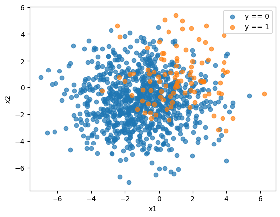
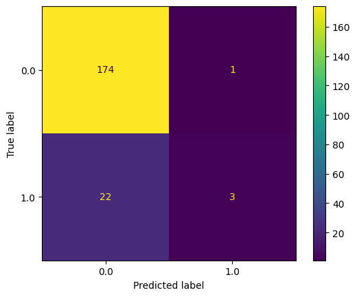
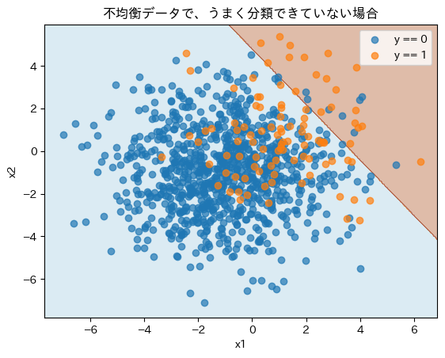
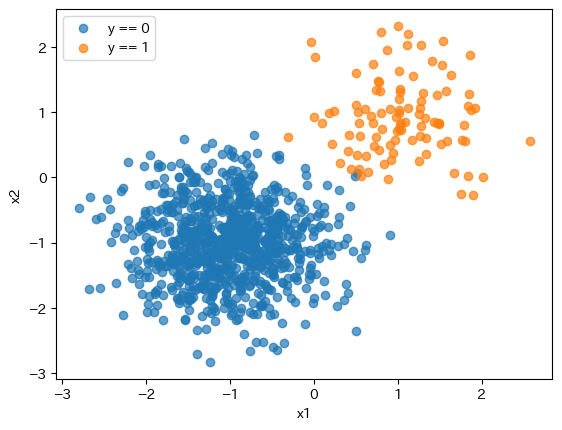
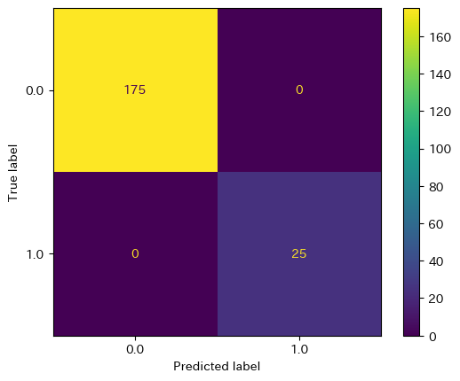
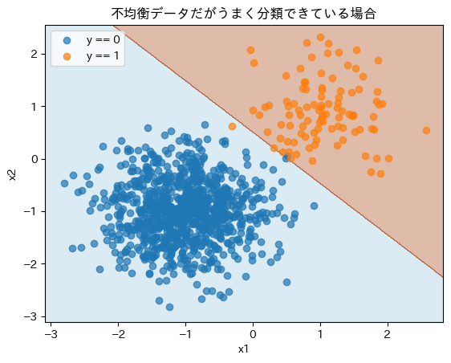

不均衡データ#
不均衡データ（imbalanced data）は目的変数の分布が極端に偏っているためにおこる問題。
例えば目的変数が\(y\in \{0, 1\}\)の二値分類において1が90%あるデータの場合、全てに対して1を予測するだけのアルゴリズムであっても正解率（accuracy）は90%になる
きちんと分類できるデータであれば不均衡であってもきちんと分類できるが、そうでない場合は不均衡具合に影響を受けてしまう
きちんと分類できない領域については、サンプリングや誤差関数への重み付けなどにより均衡データに近づけて学習させる方法がある。
ただし、その場合は均衡データとして学習している（例えば二値分類なら50%/50%）ので、予測の確率値も50%がしきい値となるような高い値が出てくるため、確率をカリブレーション（calibration）して戻す必要がある
Show code cell source
import matplotlib.pyplot as plt
import numpy as np
import pandas as pd
def gen_data(scale = 1, p_minority = 0.1, n = 1000):
n_minor = int(n * p_minority)
n_major = int(n * (1 - p_minority))
np.random.seed(0)
y = np.append(
np.zeros(shape=(n_major,)),
np.ones(shape=(n_minor,)),
)
X = np.append(
np.random.normal(loc=(-1, -1), scale=scale, size=(n_major, 2)),
np.random.normal(loc=(1, 1), scale=scale, size=(n_minor, 2)),
axis=0
)
return X, y
def plot_data(X, y):
fig, ax = plt.subplots()
ax.scatter(X[y == 0, 0], X[y == 0, 1], label="y == 0", alpha=.7)
ax.scatter(X[y == 1, 0], X[y == 1, 1], label="y == 1", alpha=.7)
ax.set(xlabel="x1", ylabel="x2")
ax.legend()
fig.show()
上手く分類できないデータの場合#
Show code cell source
X, y = gen_data(scale = 2, p_minority = 0.1)
plot_data(X, y)

Show code cell source
from sklearn.model_selection import train_test_split
X_train, X_test, y_train, y_test = train_test_split(X, y, test_size=0.2, random_state=0)
from sklearn.linear_model import LogisticRegression
clf = LogisticRegression().fit(X_train, y_train)
y_pred = clf.predict(X_test)
from sklearn.metrics import confusion_matrix, ConfusionMatrixDisplay
cm = confusion_matrix(y_test, y_pred, labels=clf.classes_)
disp = ConfusionMatrixDisplay(confusion_matrix=cm, display_labels=clf.classes_)
disp.plot()
plt.show()

Show code cell source
from sklearn.metrics import accuracy_score, balanced_accuracy_score, recall_score, precision_score, f1_score
print(f"""
accuracy: {accuracy_score(y_test, y_pred):.3g}
balanced_accuracy: {balanced_accuracy_score(y_test, y_pred):.3g}
recall: {recall_score(y_test, y_pred):.3g}
precision: {precision_score(y_test, y_pred):.3g}
f1_score: {f1_score(y_test, y_pred):.3g}
""")
accuracy: 0.885
balanced_accuracy: 0.557
recall: 0.12
precision: 0.75
f1_score: 0.207
Show code cell source
import japanize_matplotlib
x1_lim = (X[:, 0].min() * 1.1, X[:, 0].max() * 1.1)
x2_lim = (X[:, 1].min() * 1.1, X[:, 1].max() * 1.1)
X1, X2 = np.mgrid[x1_lim[0]:x1_lim[1]:1000j, x2_lim[0]:x2_lim[1]:1000j]
X_range= np.append(X1.reshape(-1, 1), X2.reshape(-1, 1), axis=1)
Y = clf.predict(X_range).reshape(X1.shape)
fig, ax = plt.subplots()
ax.contourf(X1, X2, Y, cmap='Paired', alpha=0.4)
ax.scatter(X[y == 0, 0], X[y == 0, 1], label="y == 0", alpha=0.7)
ax.scatter(X[y == 1, 0], X[y == 1, 1], label="y == 1", alpha=0.7)
# ax.set(xlabel="x1", ylabel="x2", title="Decision Boundary of Logistic Regression")
ax.set(xlabel="x1", ylabel="x2", title="不均衡データで、うまく分類できていない場合")
ax.legend()
fig.show()

分類しやすいデータの場合#
Show code cell source
X, y = gen_data(scale = 0.6, p_minority = 0.1)
plot_data(X, y)

Show code cell source
from sklearn.model_selection import train_test_split
X_train, X_test, y_train, y_test = train_test_split(X, y, test_size=0.2, random_state=0)
from sklearn.linear_model import LogisticRegression
clf = LogisticRegression().fit(X_train, y_train)
y_pred = clf.predict(X_test)
from sklearn.metrics import confusion_matrix, ConfusionMatrixDisplay
cm = confusion_matrix(y_test, y_pred, labels=clf.classes_)
disp = ConfusionMatrixDisplay(confusion_matrix=cm, display_labels=clf.classes_)
disp.plot()
plt.show()

Show code cell source
from sklearn.metrics import accuracy_score, balanced_accuracy_score, recall_score, precision_score, f1_score
print(f"""
accuracy: {accuracy_score(y_test, y_pred):.3g}
balanced_accuracy: {balanced_accuracy_score(y_test, y_pred):.3g}
recall: {recall_score(y_test, y_pred):.3g}
precision: {precision_score(y_test, y_pred):.3g}
f1_score: {f1_score(y_test, y_pred):.3g}
""")
accuracy: 1
balanced_accuracy: 1
recall: 1
precision: 1
f1_score: 1
Show code cell source
import japanize_matplotlib
x1_lim = (X[:, 0].min() * 1.1, X[:, 0].max() * 1.1)
x2_lim = (X[:, 1].min() * 1.1, X[:, 1].max() * 1.1)
X1, X2 = np.mgrid[x1_lim[0]:x1_lim[1]:1000j, x2_lim[0]:x2_lim[1]:1000j]
X_range= np.append(X1.reshape(-1, 1), X2.reshape(-1, 1), axis=1)
Y = clf.predict(X_range).reshape(X1.shape)
fig, ax = plt.subplots()
ax.contourf(X1, X2, Y, cmap='Paired', alpha=0.4)
ax.scatter(X[y == 0, 0], X[y == 0, 1], label="y == 0", alpha=0.7)
ax.scatter(X[y == 1, 0], X[y == 1, 1], label="y == 1", alpha=0.7)
# ax.set(xlabel="x1", ylabel="x2", title="Decision Boundary of Logistic Regression")
ax.set(xlabel="x1", ylabel="x2", title="不均衡データだがうまく分類できている場合")
# ax.set(xlabel="x1", ylabel="x2", title="不均衡データで、うまく分類できていない場合")
ax.legend()
fig.show()
